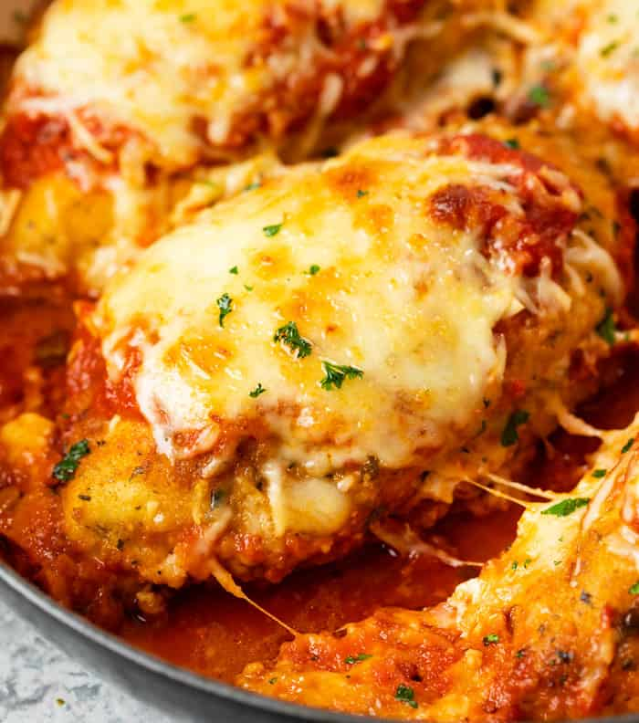

Baked Chicken Parmesan

Baked Chicken Parmesan Recipe
This easy and delicious baked chicken parmesan recipe is a healthier version of the classic Italian dish. It's made with breaded and baked chicken breasts topped with marinara sauce and cheese, and served with a side of pasta.
Ingredients
- 4 boneless, skinless chicken breasts
- 1 cup Italian-style breadcrumbs
- 1/2 cup grated Parmesan cheese
- 1 teaspoon dried oregano
- 1/2 teaspoon garlic powder
- 1/4 teaspoon salt
- 1/4 teaspoon black pepper
- 2 eggs
- 1 cup all-purpose flour
- 1 (24-ounce) jar marinara sauce
- 1 cup grated mozzarella cheese
- 1/4 cup chopped fresh basil
Steps
- Preheat the oven to 400°F (200°C).
- In a shallow dish, mix together the breadcrumbs, Parmesan cheese, oregano, garlic powder, salt, and pepper.
- In another shallow dish, beat the eggs. Place the flour in a third shallow dish.
- Coat each chicken breast in the flour, shaking off any excess. Dip the chicken into the beaten eggs, then coat it with the breadcrumb mixture, pressing to help it adhere.
- Place the coated chicken breasts on a baking sheet. Bake for 25-30 minutes, or until the chicken is cooked through and the breading is golden brown.
- Meanwhile, heat the marinara sauce in a saucepan over medium heat. When the chicken is cooked, top each breast with a spoonful of the sauce and a sprinkle of mozzarella cheese. Return the chicken to the oven and bake for an additional 5-10 minutes, or until the cheese is melted and bubbly.
- Garnish the chicken with fresh basil and serve with pasta or your choice of side dish. Enjoy!
- Let the lasagna cool for a few minutes before serving. Enjoy!
Home